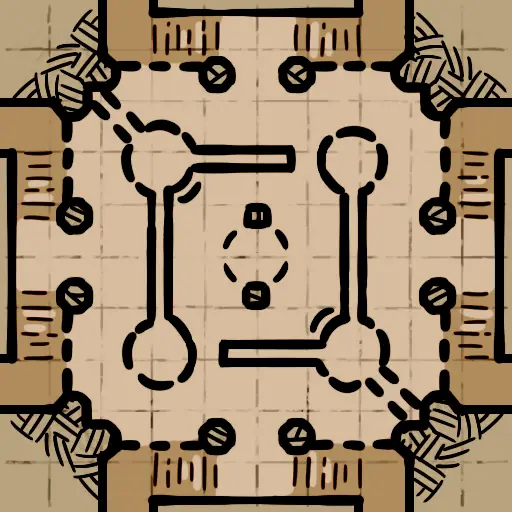
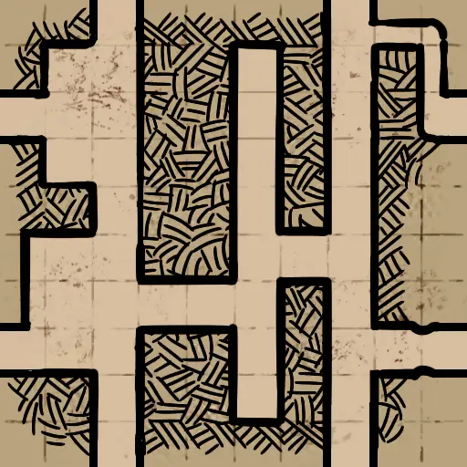
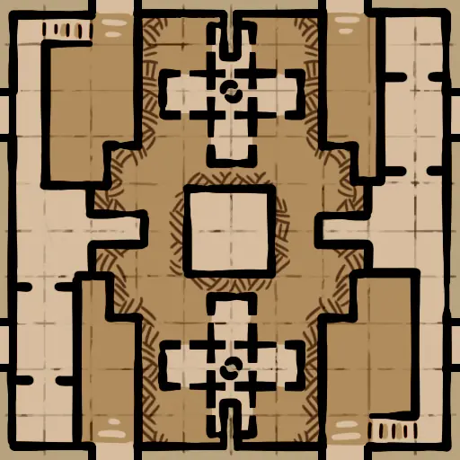

哥布林洞穴1层
哥布林迷宫 A (Goblin_Maze)CaveMaze_HR_D.json
CaveMaze.png | 找到 1 个位置 | 自动范围: ±1600

石坟 B (Stone_Graves_B)StoneGrave_Center_02_HR_D.json
StoneGrave_Center_02.png | 找到 1 个位置 | 自动范围: ±1600

哥布林宿舍 (Goblin_Rooms)Cave_Rooms_HR_D.json
Cave_Rooms.png | 找到 1 个位置 | 自动范围: ±1600

废墟2层地牢
中庭 (Atrium)Crypt_Atrium_HR_D.json
Crypt_Atrium.png | 找到 1 个位置 | 自动范围: ±1600

巨型环厅 (Wheel)CenterTower_HR_D.json
CenterTower.png | 找到 1 个位置 | 自动范围: ±6400

黑魔法图书馆 (Dark_Magic_Library)DarkMagicLibrary_Center_HR_D.json
DarkMagicLibrary_Center.png | 找到 1 个位置 | 自动范围: ±1600

中心桥 (Center_Bridge)HBridge_HR_D.json
HBridge.png | 找到 1 个位置 | 自动范围: ±1600

城墙 (Ramparts)Crypt_Ramparts_HR_D.json
Crypt_Ramparts.png | 找到 1 个位置 | 自动范围: ±1600

牢笼 (Cage)TheCage_HR_D.json
TheCage.png | 找到 1 个位置 | 自动范围: ±1600

迷你环厅 (Mini_Wheel)TheMiniWheel_HR_D.json
TheMiniWheel.png | 找到 1 个位置 | 自动范围: ±1600

陵墓 (Tombs)Tomb_Center_HR_D.json
Tomb_Center.png | 找到 1 个位置 | 自动范围: ±1600

墓园 (Cemetery)Cemetery_03_HR_D.json
Cemetery_03.png | 找到 1 个位置 | 自动范围: ±1600

教堂 (Chapel)Crypt_Chapel_HR_D.json
Crypt_Chapel.png | 找到 1 个位置 | 自动范围: ±1600

黑暗祭司 (Dark_Priests)CorridorofDarkPriests_HR_D.json
CorridorofDarkPriests.png | 找到 6 个位置 | 自动范围: ±1600

死亡厅堂 (Death_Hall)DeathHall_HR_D.json
DeathHall.png | 找到 1 个位置 | 自动范围: ±1600

渔场 (Fishing_Grounds)FishingGround_HR_D.json
FishingGround.png | 找到 1 个位置 | 自动范围: ±1600

环廊 (Circular)OssuaryEdge_HR_D.json
OssuaryEdge.png | 找到 1 个位置 | 自动范围: ±1600

储藏室 (Storeroom)Storeroom_HR_D.json
Storeroom.png | 找到 1 个位置 | 自动范围: ±1600

沼泽 (Swamp)Swamp_HR_D.json
Swamp.png | 找到 1 个位置 | 自动范围: ±1600

地下神坛 (Underground_Altar)UndergroundAltar_HR_D.json
UndergroundAltar.png | 找到 1 个位置 | 自动范围: ±1600

冰图1层
小道 A (IceCave_Path_A)IceCave_Path_HR_D.json
IceCave_Path.png | 找到 1 个位置 | 自动范围: ±1600

废墟3层炼狱
百鬼桥 (Hellcrossbridge)Inferno_Hellcrossbridge_HR_D.json
Inferno_Hellcrossbridge.png | 找到 1 个位置 | 自动范围: ±1600

厄风领 (Hellwind)Inferno_Hellwind_HR_D.json
Inferno_Hellwind.png | 找到 1 个位置 | 自动范围: ±1600

判罪之路 (Judgementroad)Inferno_Judgementroad_HR_D.json
Inferno_Judgementroad.png | 找到 2 个位置 | 自动范围: ±1600

苦行阶梯 (Painfulsteps)Inferno_Painfulsteps_HR_D.json
Inferno_Painfulsteps.png | 找到 1 个位置 | 自动范围: ±1600

死亡祭坛 (Death_Altar)DeathAltar_HR_D.json
DeathAltar.png | 找到 1 个位置 | 自动范围: ±1600

仪式室 (Ritual_Rooms)InfernoRooms_HR_D.json
InfernoRooms.png | 找到 1 个位置 | 自动范围: ±1600

恶魔巢穴 (Demon_Lairs)Inferno_LavaCorner_HR_D.json
Inferno_LavaCorner.png | 找到 1 个位置 | 自动范围: ±1600

鲜血监牢 (Blood_Prison)Skull_HR_D.json
Skull.png | 找到 1 个位置 | 自动范围: ±1600

废墟1层
废弃圣所 (Abandoned_Sanctuary)Ruins_Chapel_HR_D.json
Ruins_Chapel.png | 找到 1 个位置 | 自动范围: ±1600

森林 B (Forest_B)Ruins_Forest_02_HR_D.json
Ruins_Forest_02.png | 找到 1 个位置 | 自动范围: ±1600

迷失森林 (Fallen_Forest)Ruins_Forest_06_HR_D.json
Ruins_Forest_06.png | 找到 2 个位置 | 自动范围: ±1600

坟场 (Graveyard)Ruins_Grave_HR_D.json
Ruins_Grave.png | 找到 1 个位置 | 自动范围: ±1600

GreatHall_01_Destroyed_BossTest (GreatHall_01_Destroyed_BossTest)Ruins_GreatHall_01_Destroyed_BossTest_D.json
未找到 | 找到 1 个位置 | 自动范围: ±1600
未找到
礼拜堂 A (Greathall_A)Ruins_GreatHall_01_Destroyed_HR_D.json
Ruins_GreatHall_01_Destroyed.png | 找到 1 个位置 | 自动范围: ±1600

礼拜堂 C (Greathall_C)Ruins_GreatHall_03_Destroyed_HR_D.json
Ruins_GreatHall_03_Destroyed.png | 找到 1 个位置 | 自动范围: ±1600

要塞 (Keep)Ruins_Keep_HR_D.json
Ruins_Keep.png | 找到 1 个位置 | 自动范围: ±1600

史莱姆森林 (Slime_Forest)Ruins_SlimeForest_01_HR_D.json
Ruins_SlimeForest_01.png | 找到 1 个位置 | 自动范围: ±1600

碎石地 (Stones)Ruins_Stonehenge_HR_D.json
Ruins_Stonehenge.png | 找到 1 个位置 | 自动范围: ±1600

水图
海盗监狱 (PiratePrison)ShipGraveyard_PiratePrison_HR_D.json
ShipGraveyard_PiratePrison.png | 找到 1 个位置 | 自动范围: ±6400